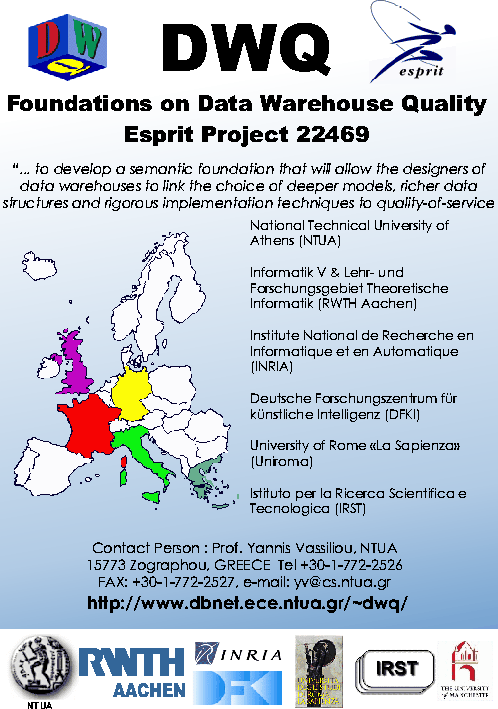

| Overview | The Metadata Repository ConceptBase |
Source Integration
and Conceptual Modelling |
Data Reconciliation | References |
The European ESPRIT Long Term Research Project DWQ (Foundations of Data Warehouse Quality) has aimed at improving the quality of data warehouse design and operation through systematic enrichment of the semantic foundations of data warehousing. Logic-based knowledge representation and reasoning techniques were developed to control accuracy, consistency, and completeness via advanced conceptual modeling techniques for source integration, data reconciliation, and multi-dimensional aggregation. This is complemented by quantitative optimization techniques for view materialization, optimizing timeliness and responsiveness without losing the semantic advantages from the conceptual approach. At the operational level, query rewriting and materialization refreshment algorithms exploit the knowledge developed at design time. The demonstration has shown the interplay of these tools based on an example extracted from a real-world application at Telecom Italia.

|
|
|
|
|
|
||
|
|
|
|
|
|
||
|
|
||
|
|||
|
The demonstration will
follow roughly the process indicated in the figure below. In this figure, the
dark-grey boxes indicate logical data objects, such as relations, queries, or
materialized (possibly multi-dimensional) views.
The light-grey boxes describe conceptual models; in DWQ, these are
externally represented as extended Entity-Relationship models, internally
modeled using Description Logic formalisms from artificial intelligence to allow
for subsumption reasoning. Steps 1 through 6 represent the extended design
approach shown in the demo. The two light-grey boxes on the right describe
related support at the operational level, focusing on the two key problems of
aggregate query optimization and view refreshment. The whole process is
administered through a metadata repository which has been implemented using the ConceptBase
system [JGJ+95].